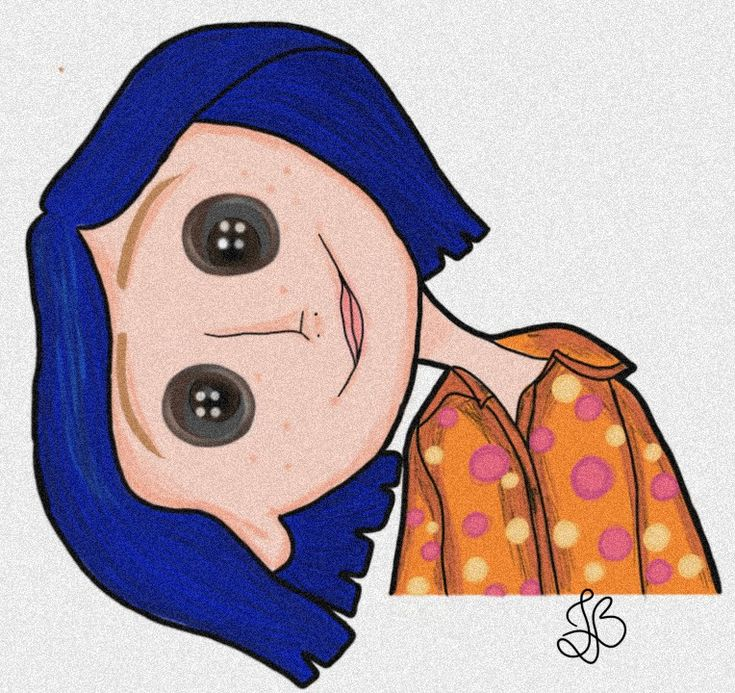
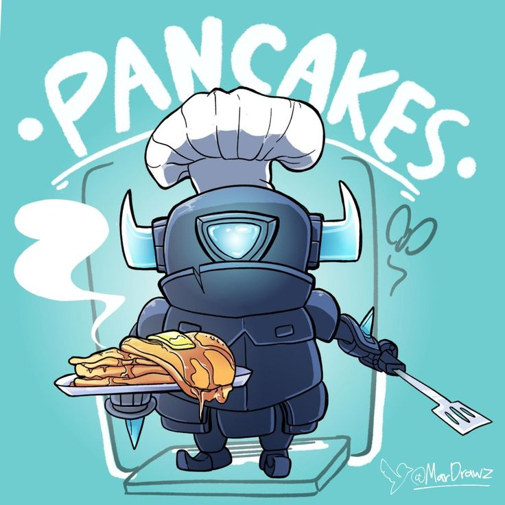
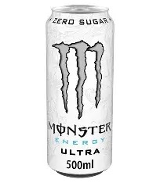

Isis Machuca Carrillo
Mi materia favorita es: Programación, ya que esa es la carrera que escogí, me gusta aunque me cuesta un poco de trabajo.
Zeus Giovani Hernandez Galicia
Mi materia favorita es:Matemáticas, por que le entiendo bien y se me dan muy fáciles.
Axel Mauricio Moreno Slvador
Mi materia favorita es:Programación, Me gusta mucho y siento que soy muy bueno para en esta materia. Marcos Alain Carmona Roque
Mi materia favorita es: Humanidades, Las demás materias me aburren y esa es la unica que me mantiene entretenido.
Kianna Yaretzi Aranda Limón
Mi materia favorita es:Lengua y Comunicación, Porque se me hace una materia muy interesante en la que puedo expresarme mucho mejor, hablar y escribir con más claridad.